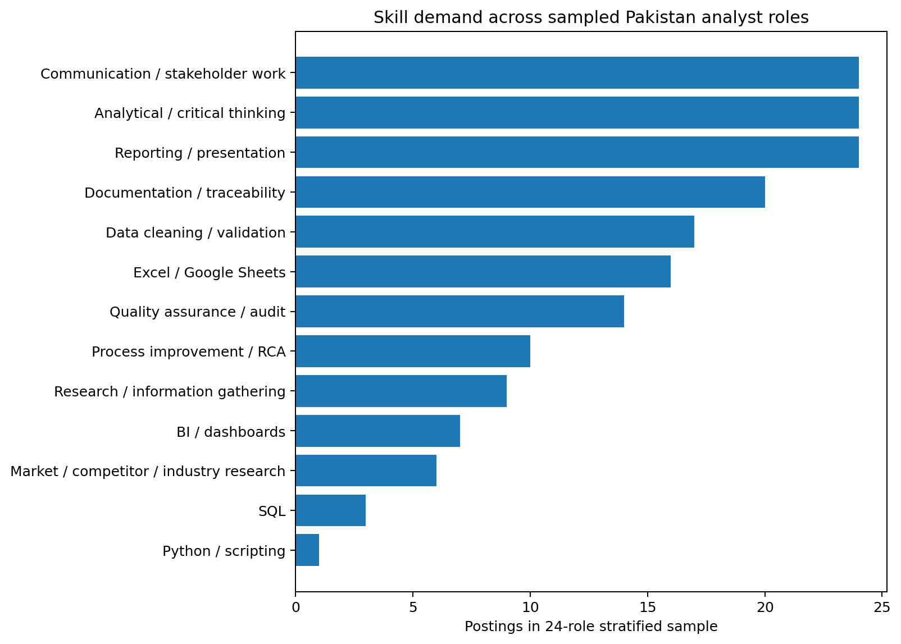
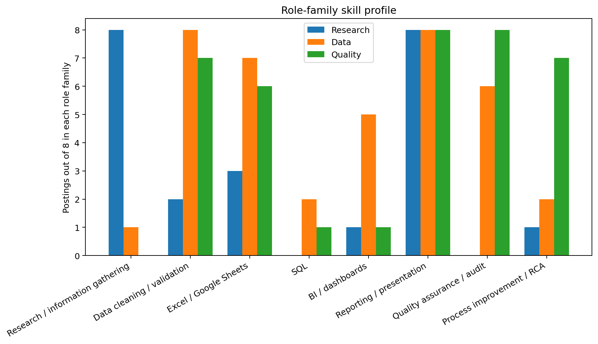

Pakistan analyst job market and skills demand
A stratified analysis of 24 public Pakistan job advertisements: eight Research, eight Data and eight Quality roles. The study maps role types, codes recurring skills, compares role-family profiles and converts the findings into a practical learning priority.
Executive summary
The sampled market does not separate research, data and quality into completely isolated disciplines. All 24 postings required analytical thinking, reporting and communication. The main difference was the operating method: Research roles emphasized information gathering, market or competitor research and source documentation; Data roles emphasized cleaning, spreadsheets, reporting, dashboards and selected SQL; Quality roles emphasized validation, audit, documentation and process improvement.
Research question
What Research, Data and Quality analyst roles are publicly visible in Pakistan, which skills recur, and which skills should a candidate with practical research and reporting-quality experience prioritize first?
Methodology
- Defined Research, Data and Quality as the three target role families.
- Selected eight public postings per family for a balanced 24-posting demonstration sample.
- Recorded title, employer, location, role information and source URL.
- Coded thirteen recurring skill categories as present or absent using visible evidence.
- Calculated total and role-family frequencies.
- Retained the complete coded dataset and source index in the downloadable workbook.
Overall skill demand

| Skill | Postings | Share | Interpretation |
|---|---|---|---|
| Reporting / presentation | 24 of 24 | 100% | Universal across the sample. |
| Analytical / critical thinking | 24 of 24 | 100% | Universal across the sample. |
| Communication / stakeholder work | 24 of 24 | 100% | Analysis must be explained, not only produced. |
| Documentation / traceability | 20 of 24 | 83% | Especially visible in Research and Quality roles. |
| Data cleaning / validation | 17 of 24 | 71% | Central to Data roles and highly visible in Quality. |
| Excel / Google Sheets | 16 of 24 | 67% | The most accessible technical tool requirement. |
| Quality assurance / audit | 14 of 24 | 58% | Also common in operational Data roles. |
| SQL | 3 of 24 | 13% | Important in selected Data and Data Quality roles. |
| Python / scripting | 1 of 24 | 4% | Desirable in one sampled posting, not universal. |
Role-family skill profile

Research roles
All eight required research or information gathering; six involved market, competitor or industry research; seven required documentation or traceability; and all required reporting, analysis and communication.
Data roles
All eight involved cleaning or validation and reporting. Seven named Excel or Google Sheets, five involved BI or dashboards, two explicitly required SQL, and one listed Python as desirable.
Quality roles
All eight involved quality assurance or audit and documentation; seven involved data validation and process improvement; six included Excel or MS Office.
Candidate learning priority
- Research method and decision writing: defined questions, source logs, synthesis, limitations and recommendations.
- Excel / Google Sheets: formulas, pivots, lookups, cleaning, validation and charting.
- Data cleaning and validation: duplicate handling, standardization, completeness and traceability.
- Quality audit, RCA and CAPA: measurable criteria, defect classification and effectiveness checks.
- Basic SQL: SELECT, WHERE, GROUP BY, JOIN and reconciliation queries after initial job readiness.
- BI literacy: KPI definitions, dashboard interpretation and Power BI fundamentals.
Limitations
- The sample is stratified and does not estimate role-family market share.
- Job postings can change, expire or be duplicated across platforms.
- Skill coding uses visible wording and may undercount implied requirements.
- Search-result pages sometimes provide only partial job descriptions.
Selected public sources
- Indeed Pakistan - Research Analyst jobs
- Indeed Pakistan - Data Analyst jobs in Lahore
- Indeed Pakistan - Quality Analyst jobs
- LinkedIn Pakistan - Data Analytics jobs
- Limitless Incubators - Business Research Analyst
- ACE Money Transfer - Junior Commercial Data Analyst
- Burq - Data Analyst
- Brainlake - Data Quality Analyst
- NielsenIQ - Quality Associate Data OPS